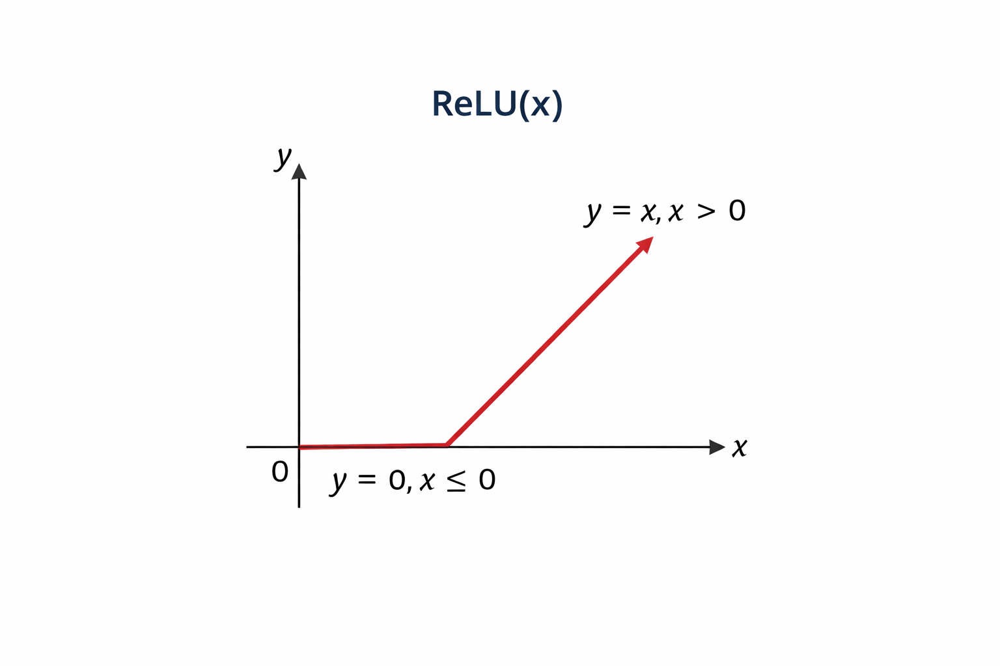
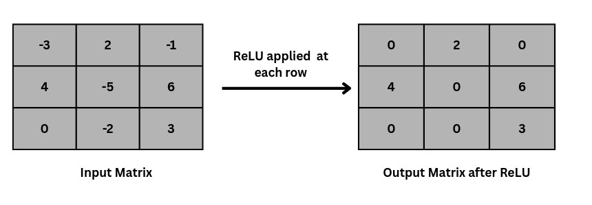
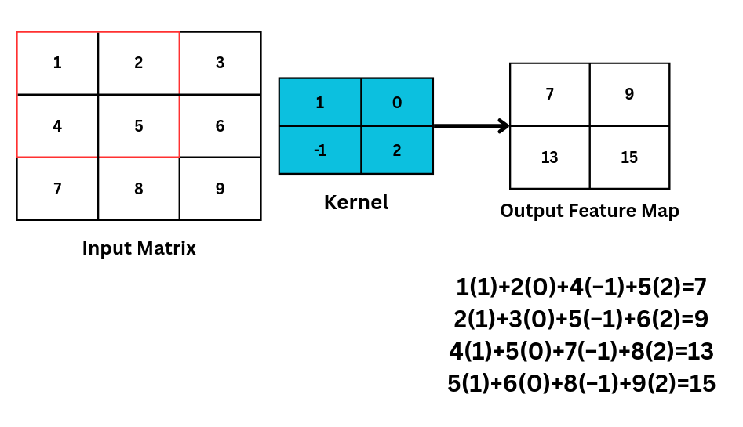
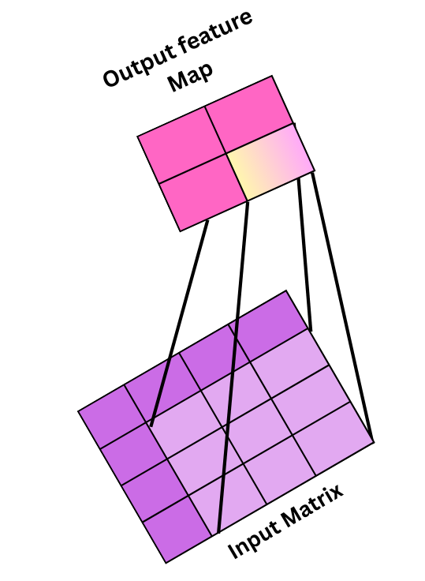
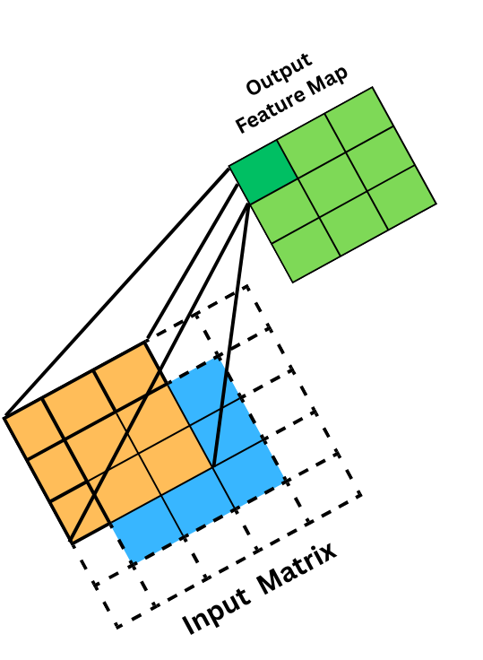
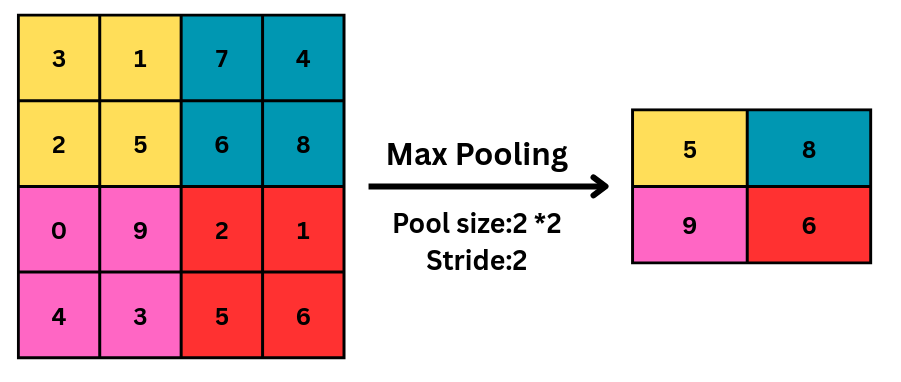
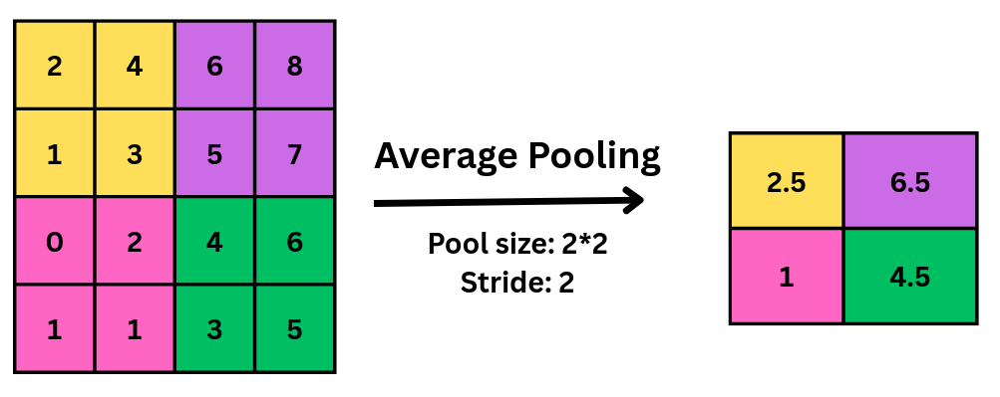
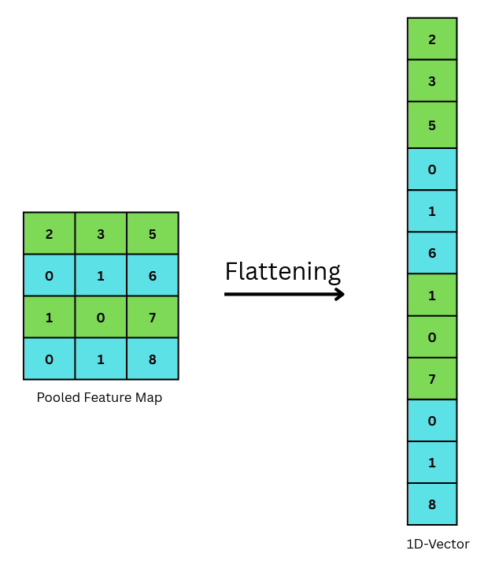
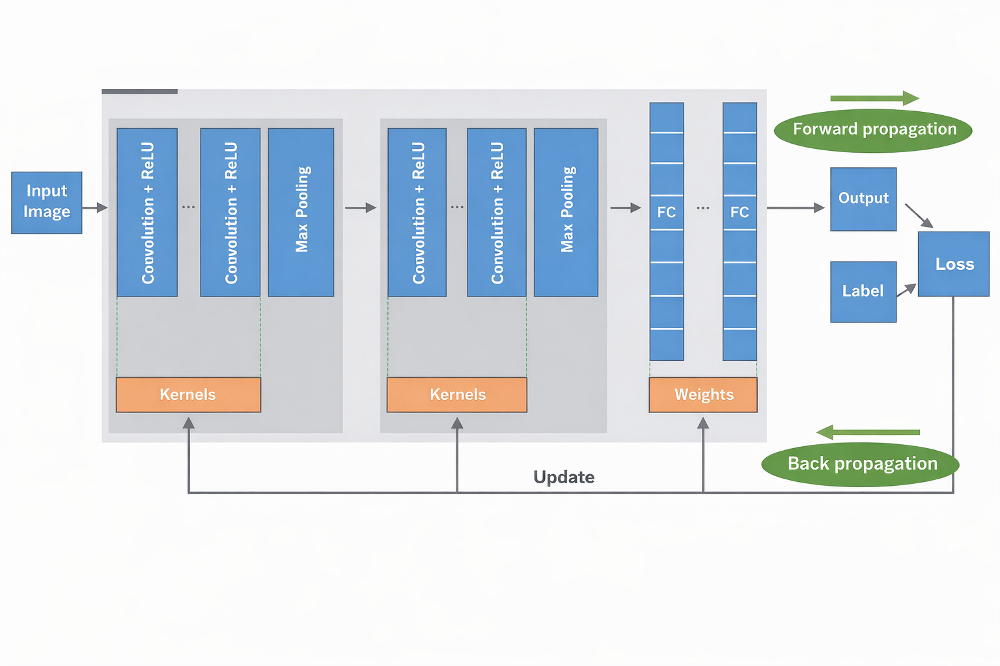

Convolutional Neural Networks (CNN)
Theory
I. Motivation for Convolutional Neural Networks
Fully connected networks aren't ideal for images because flattening destroys spatial relationships between nearby pixels, and the dense connections create too many parameters, making them costly and prone to overfitting. CNNs solve this by using local connectivity and shared weights, which preserve spatial patterns and make learning more efficient and effective for visual data.
II. Digital Images as Inputs to CNNs
A digital image can be represented as a 3D array (Tensor) with Height, Width, and Channels. For color images, the three channels correspond to RGB intensity values. For example, CIFAR-10 images are 32 × 32 pixels with three channels, giving an input tensor of shape 32 × 32 × 3. CNNs take this multi-dimensional input directly, preserving spatial and channel-wise information during processing.
III. Data Normalization
Raw pixel values range from 0 to 255. Before training, we scale these values using a specific Mean and Standard Deviation (e.g., Mean: 0.4914, Std: 0.2470 for CIFAR-10). It scales input features to a similar range, ensuring gradient stability and allowing the model to converge (learn) faster.
IV. Neurons in the Convolutional Layer
Local Connectivity: Unlike standard neurons that try to look at an entire image at once, a CNN neuron focuses only on a small, specific window of the image called the receptive field. This "local connectivity" ensures the network can focus on small details rather than getting overwhelmed by the whole picture.
Calculate Weighted Sum & Bias: Inside this small window, the neuron performs a simple mathematical operation. It takes the pixel values in that area and multiplies them by its own learned weights (stored in a filter or kernel). It adds these results together, along with a bias, to produce a single numerical value. This value represents how strongly a specific feature, such as a vertical edge, is present at that location.
Activation & Feature Creation: Finally, this value is passed through an activation function (such as ReLU) to introduce nonlinearity, allowing the network to learn more complex patterns. The resulting number becomes one single "pixel" or element in a new grid called a feature map. Below is the equation for calculating the output of a single neuron in a convolutional layer.
Where:
- = input pixel in receptive field
- = filter weight
- = bias
- = activation function (ReLU, sigmoid, etc.)
V. Activation Functions in CNNs
ReLU (Rectified Linear Unit): Applied after convolution, defined as:
as shown in Fig 1.

Fig 1: Relu Function
Refer Fig 2 shown below to understand how the ReLU function affects the filter output

Fig 2: ReLU activation function applied on input matrix
VI. Convolution Operation
Convolution slides a small filter over the image and computes weighted sums to capture local features, such as edges and textures. Reusing the same filter across the image reduces the number of parameters while preserving strong feature learning.
Mathematically, the convolution operation can be expressed as the above equation, where is the input image, and is the kernel.
Refer to Fig. 3 to understand how the convolution operation is actually performed by the kernel on an input image matrix, and a feature map is calculated.

Fig 3: showing how kernel slides and calculate the feature map in convolution operation
Learnable Parameters: The "weights" in the filter are not hand-designed; the network learns the best values to detect features like edges automatically.
VII. Feature Maps and Hierarchical Feature Learning
After convolution, the output is a feature map. Each filter detects a specific feature, and combining multiple filters produces multiple feature maps. As layers go deeper, simple features (like edges) combine into complex ones (shapes and parts), letting CNNs learn useful patterns automatically without manual feature design.
VIII. Stride and Padding
Stride is how many pixels the filter shifts each step; a larger stride reduces the output size. Padding adds (usually zero) pixels around the input to control output dimensions and keep edge information. Below is the equation for the output Feature Map if stride and padding are introduced on the input image, where = Input size, = Filter size, = Padding, and = Stride.
Refer to Fig. 4 to understand how the stride operation is performed on an input matrix with a kernel size of 3 × 3 to get an output of 2 × 2.

Fig 4: showing the output feature map when 3×3 kernel with stride 2 is applied on 4×4 image to produce 2×2 output
Refer to Fig 5 to visualize how our output feature map will look if padding is 1, so

Fig 5: This shows 3×3 filter with padding of 1 on 3×3 matrix
IX. Downsampling: Pooling Layers
Pooling downsamples feature maps by reducing their spatial dimensions while retaining important features. Common types include max pooling, average pooling, and global average pooling, which can also help reduce overfitting.
i. Max Pooling
Max pooling is a pooling operation that selects the maximum element from the region of the feature map covered by the filter. Thus, the output after the max-pooling layer would be a feature map containing the most prominent features of the previous feature map, as shown in Fig 6.

Fig 6: Max pooling is applied on a feature map
ii. Average Pooling
Average pooling computes the average of the elements present in the region of the feature map covered by the filter. Thus, while max pooling gives the most prominent feature in a particular patch of the feature map, average pooling gives the average of the features present in a patch, as shown in Fig 7.

Fig 7: showing average pooling operation on matrix
iii. Global Average Pooling (GAP)
GAP is a downsampling operation typically used at the end of a CNN's feature-extraction pipeline to prepare the data for final classification. Unlike standard pooling, which operates on small local regions, GAP summarizes each entire feature map into a single numerical value by averaging all pixels in that map.
Its key roles in architecture include:
- Spatial Aggregation: It aggregates all spatial information across a feature map, making the network's final decision more robust to the specific location of a feature.
- Vector Conversion: It converts 3D feature maps into a single 1D feature vector, which is then used by the classifier to produce the final prediction.
- Parameter Efficiency: By replacing traditional flattening and large fully connected layers, GAP significantly reduces the number of trainable parameters.
- Overfitting Prevention: This reduction in parameters helps reduce computational complexity and prevents overfitting, allowing the model to generalize better to new data.
X. Flattening
Before entering the fully connected layer, the feature maps from the previous convolutional and pooling layers are typically flattened into a one-dimensional vector, as shown in Fig 8. This is done to convert multidimensional feature maps into a 1D vector suitable for fully connected layers.

Fig 8: showing how flattening converts matrix in 1D vector
XI. Advanced Training Techniques
Batch Normalization: Used after convolution to normalize activations, which stabilizes and accelerates training.
Data Augmentation: Techniques like Random Horizontal Flips and Random Crops create "virtual" training data, helping the model generalize to unseen images.
MixUp Regularization: A technique where two images and their labels are blended together (e.g., a "cat-dog" hybrid) to force the model to learn more robust decision boundaries.
XII. Overall CNN Architecture
A typical CNN stacks convolution, activation, and pooling layers to extract features, then uses fully connected layers or global pooling as a classifier, as shown in Fig. 9. This pipeline enables strong image recognition performance with efficient use of parameters.

Fig 9: Complete CNN architecture
Source: Yamashita et al., Convolutional neural networks: an overview and application, 2018.
Merits of Convolutional Neural Networks:
- Efficient parameter sharing (fewer weights than fully connected networks)
- Preserves spatial structure in images
- Automatically learns and extracts features
- Strong generalization on image data
- Scalable to large and complex visual tasks
- Backbone of modern computer vision systems
Demerits of Convolutional Neural Networks:
- Require high computational resources (GPU/TPU)
- Need large labeled datasets for best performance
- Training deep CNNs can be time-consuming
- Features learned are hard to interpret (low explainability)